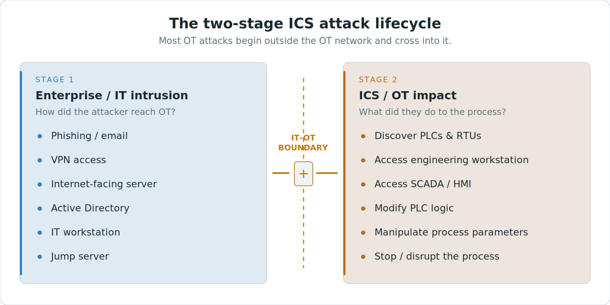
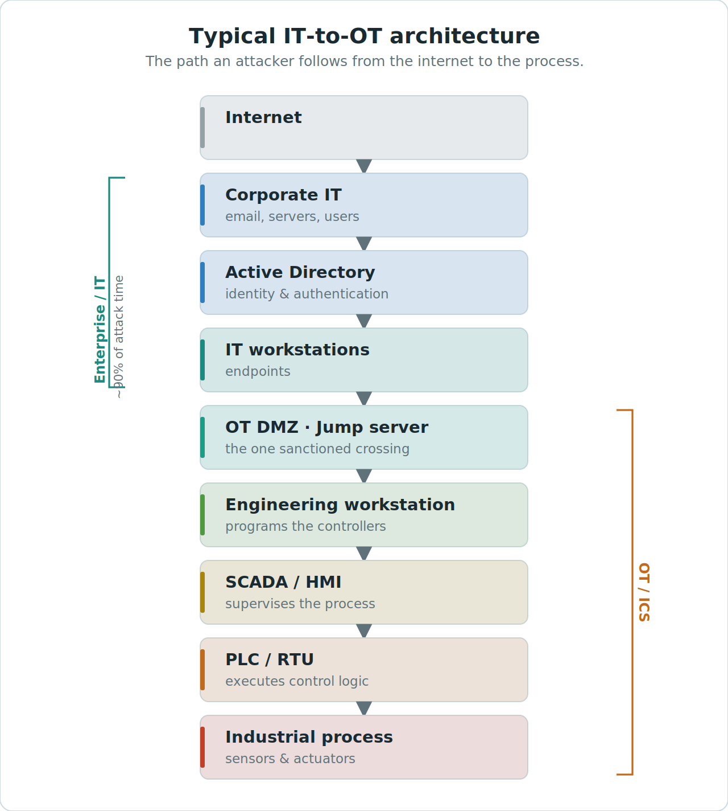
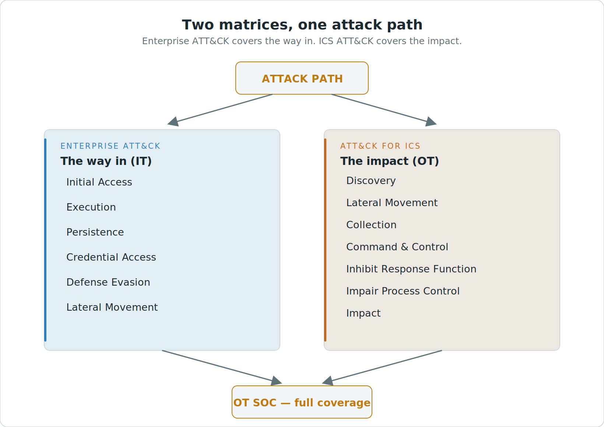
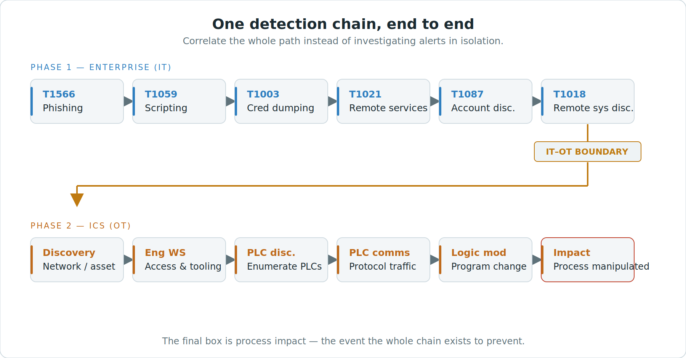

Source document sections 1–7, with original figures. Select a figure to open it at full size.
1 · The two-stage attack lifecycle
Scenario scope. This page illustrates an adversary gaining a foothold in Enterprise IT and crossing into OT. The two stages and original diagrams describe this route.
Caveat. Other OT incidents can begin through vendor remote access, an exposed OT service, removable media, a transient engineering device, or activity inside the facility. Technical faults can also trigger an OT investigation. Start with the earliest supported observation and record the entry path as unknown when evidence is missing.

Fig 1 — Two questions, split by the IT–OT boundary.
Stage 1 — Enterprise / IT intrusion. How did the attacker reach the OT environment?
Stage 2 — ICS / OT impact. What did the attacker do to the industrial process?
Stage 1 — the way in
The attacker compromises something in the enterprise first and works toward OT. Common footholds: phishing or malicious email, a VPN account, an internet-facing server, Active Directory, an IT workstation, a jump server in the OT DMZ. None of this touches a PLC yet — which is exactly why it is easy to miss if OT monitoring only watches OT protocols.
The IT–OT boundary
In this example, an industrial demilitarized zone separates Enterprise IT from OT. Compare each observed crossing with approved routes, authentication requirements and logging coverage at the site.
Stage 2 — the impact
Once inside OT the actions become process-specific: discover PLCs and RTUs, reach an engineering workstation, access SCADA / HMI, modify PLC logic, manipulate process parameters, and stop or disrupt the process.
Monitoring the illustrated IT-to-OT route
Where a site has an IT-to-OT route, Enterprise and boundary telemetry may reveal activity before it reaches the control environment.

Fig 2 — The path from the internet to the process. Illustrative Enterprise-to-OT route.
2 · Enterprise + ICS ATT&CK
Choose Enterprise or ICS ATT&CK according to the observed behavior and its context. Both matrices can describe behaviors across this scenario.

Fig 3 — One attack path, two matrices, converging in the OT SOC.
Enterprise ATT&CK describes how an attacker compromises and moves through the organisation’s computing environment — the way in.
ATT&CK for ICS describes how an attacker interacts with and impacts the control environment — the impact.
One chain, end to end
In this example, the adversary aims to modify a programmable logic controller. The illustrated chain crosses the IT–OT boundary. The mappings describe behaviors on that route.

Fig 4 — The same intrusion, mapped across both matrices.
Phase 1 — Enterprise (IT)
| Technique | Name | Behaviour |
|---|---|---|
| T1566 | Phishing | Initial foothold via email |
| T1059 | Command & Scripting | Malware / script execution |
| T1003 | Credential Dumping | Steal credentials (e.g. LSASS) |
| T1021 | Remote Services | Lateral movement (RDP / SMB) |
| T1087 | Account Discovery | Enumerate accounts in AD |
| T1018 | Remote System Discovery | Map reachable systems |
Phase 2 — ICS (OT), after crossing the boundary: network/asset discovery → engineering workstation → PLC discovery → PLC communication → program/logic modification → process manipulation. Because both halves are covered, the SOC can correlate the entire chain rather than triaging alerts in isolation — and it can act during Phase 1, before the process is ever touched.
The key difference
| Matrix | The question it answers |
|---|---|
| Enterprise ATT&CK | How does the attacker compromise and move through the computing environment? |
| ATT&CK for ICS | How does the attacker interact with and impact the control environment? |
Rule of thumb: use Enterprise techniques for the IT-to-OT attack path, and ICS techniques for OT-specific behaviour and process impact. Enterprise + ICS is meaningfully better coverage than either alone.
3 · Designing OT detection use cases
The common mistake is to start from “what logs do I have?” That anchors detection to whatever telemetry happens to exist. Start from the other end: what attacker behaviour do I want to detect? Then work down to the telemetry and logic that would catch it.
The design pipeline
Threat — the adversary behaviour you care about.
ATT&CK technique — name it with a technique ID so coverage is auditable.
Attack behaviour — what that technique looks like in practice.
Required telemetry — the log or sensor that would actually see it.
Detection logic — the rule that fires on it.
Correlation — link it to the rest of the chain.
Investigation — what the analyst checks when it fires.
Response — the action, ordered safety-first for OT.
Coverage mapping
Laid against the two-stage chain, a coverage plan looks like this. The top three rows are Stage 1 (Enterprise); the bottom three are Stage 2 (ICS).
| Threat | Matrix | Telemetry | Detection |
|---|---|---|---|
| Compromise OT workstation | Enterprise | EDR | Suspicious process |
| Credential theft | Enterprise | EDR / Windows | LSASS access |
| Lateral movement | Enterprise | Windows / Network | RDP / SMB anomaly |
| OT discovery | ICS | Network / Nozomi | PLC scanning |
| PLC manipulation | ICS | OT network / PLC | Unauthorized programming |
| Process disruption | ICS | OT / SCADA | Abnormal control command |
A complete scenario worth presenting
Phishing → credential theft → lateral movement → OT DMZ → engineering workstation → PLC discovery → PLC modification → process impact. Walk it left to right: each hop is a technique, each technique needs telemetry, each detection is one link, and correlation turns the links into a single investigable chain. That one narrative shows why an OT SOC needs both matrices — and why watching only OT protocols catches the attacker far too late.
4 · Realistic device & protocol mapping by level
The tables below pair each level’s protocols with the actual devices and vendors you meet in the field, the normal direction of the flow, and the highest-value thing to monitor. Ports shown are defaults.
Level 5 / 4 — Enterprise & Business Operations
| Protocol | Typical devices & vendors | What to watch |
|---|---|---|
| HTTPS/TLS 443 | Corporate endpoints, M365 / Exchange, SAP / Oracle ERP, Azure / AWS | Anomalous egress, TLS to rare destinations |
| SAML / OIDC | Entra ID / Okta IdP ↔ apps | Impossible travel, token / MFA abuse |
| VPN (IPsec/SSL) | Palo Alto / Fortinet / Cisco concentrators | Access from unusual sources toward OT-adjacent hosts |
| SMB / LDAP / Kerberos | Windows workstations → AD domain controllers | AD recon (T1087), ticket abuse |
| SQL (TDS/TNS) | ERP / MES → SQL Server / Oracle | Bulk export, off-hours queries |
| RDP 3389 | Admin hosts → servers | Lateral movement precursors (T1021) |
Level 3.5 — Industrial DMZ
| Function | Typical products | What to watch |
|---|---|---|
| Jump / bastion host | CyberArk / BeyondTrust PAM-brokered | Sessions bypassing the jump host; off-hours use |
| Historian replication | OSIsoft PI ↔ PI, AVEVA Historian | One-way egress only; reverse / inbound flows |
| Patch & AV relay | WSUS / SCCM, Defender relay | Unexpected inbound update sources |
| Data diode (high-sec) | Waterfall, Owl | Any path that implies a two-way channel |
| Protocols | SFTP/SCP, HTTPS, Syslog, controlled RDP/SSH, PI, tunnelled OPC UA | Direct IT→OT that skips the DMZ |
Level 3 — Site Operations
| Protocol | Typical devices & vendors | What to watch |
|---|---|---|
| OPC UA 4840 | Kepware KEPServerEX, vendor OPC servers; MES / historian clients | New OPC client against a stable server list |
| MQTT/Sparkplug 8883 | Edge gateways / brokers (HiveMQ, vendor) | New publisher; unexpected topics |
| MES / historian | Siemens Opcenter, Rockwell FactoryTalk, SAP ME; OSIsoft PI, AVEVA | Unexpected northbound / cloud egress |
| SNMP 161 | OT switches, firewalls, appliances | Write community strings, config changes |
Level 2 — Supervisory Control
| Protocol | Typical devices & vendors | What to watch |
|---|---|---|
| SCADA / HMI | Siemens WinCC / WinCC OA, AVEVA System Platform (Wonderware), GE iFIX / CIMPLICITY, Rockwell FactoryTalk View SE, Schneider Geo SCADA | New / rogue HMI; command bursts |
| Engineering WS | Siemens TIA Portal / STEP 7, Rockwell Studio 5000, Schneider Control Expert, ABB Automation Builder | Programming from a non-engineering host |
| Modbus TCP 502 | SCADA → PLC / RTU | Write function codes from unexpected source; new master |
| EtherNet/IP 44818 | SCADA → Logix PLC | CIP forward-open; program / firmware services |
| DNP3 20000 · IEC104 2404 | SCADA master → RTU / IED | Command frames (control) from unexpected source |
Level 1 — Basic Control
| Protocol | Typical devices & vendors | What to watch |
|---|---|---|
| PROFINET · S7comm 102 | Siemens S7-1500 / 1200 / 400 / 300, ET200 I/O, SINAMICS drives | TIA download; S7comm-plus program change; DCP-Set |
| EtherNet/IP-CIP | Rockwell ControlLogix / CompactLogix, FLEX / POINT I/O, PowerFlex | CIP program / firmware download; mode change |
| Modbus · UMAS | Schneider Modicon M580 / M340 / Quantum, SCADAPack RTU | UMAS session / opcodes over Modbus 502 |
| Other controllers | ABB AC500, Emerson DeltaV / PACSystems, GE RX3i; SEL / ABB / Emerson RTUs | Run/Stop/Program mode change; new controller relationship |
| PROFIBUS · EtherCAT · CANopen | Fieldbus I/O, servo drives, motion | Legacy / serial — monitored at the gateway |
Level 0 — Physical Process
| Protocol | Typical devices & vendors | Monitoring reality |
|---|---|---|
| 4–20 mA · HART | Emerson Rosemount, Endress+Hauser, Yokogawa, ABB transmitters | Not IP-visible; HART-IP / WirelessHART gateways are the edge |
| FOUNDATION Fieldbus · PROFIBUS PA | Field instruments on FF / PA segments | Device replace / calibration via asset mgmt (Emerson AMS, PRM) |
| IO-Link · AS-i | Smart sensors / actuators → masters → PLC | Seen only once aggregated at the PLC |
Safety Instrumented Systems (SIS)
SIS require independent, isolated architecture. Safety network layers protect the communication, not the separation. The highest-consequence event in all of OT is an engineering connection to the SIS — this is exactly what TRITON / TRISIS did to a Triconex system via TriStation.
| Protocol / tool | Typical logic solvers | What to watch |
|---|---|---|
| PROFIsafe | Siemens S7-1500F / S7-400FH | Any engineering / program change to safety logic |
| CIP Safety | Rockwell GuardLogix | Force / bypass; safety mode change |
| TriStation | Schneider Triconex Tricon / Trident | Any TriStation connection (TRITON vector) |
| Vendor SIS | Emerson DeltaV SIS, Yokogawa ProSafe-RS, HIMA, ABB 800xA HI | Key-switch position; bypass / forces / downloads |
Where the monitoring sits
OT visibility is passive-first: Nozomi Guardian / Vantage / CMC, Claroty CTD / xDome, Dragos Platform, Microsoft Defender for IoT, Forescout, Armis, fed by SPAN / TAP at the core OT and DMZ switches (and per-substation in utilities). Active or smart-polling (Nozomi Arc, Claroty) is optional and OT-owner-gated.
5 · How the mapping changes with the vendor stack
The single most important nuance: the program-change and logic-download actions — the crown-jewel events — ride proprietary protocols layered on standard transports. Monitoring the standard protocol alone misses them.
| Stack | L1 fieldbus | Engineering path (proprietary) | Detection focus |
|---|---|---|---|
| Siemens | PROFINET / PROFIBUS | STEP 7 / TIA → S7comm / S7comm-plus (TCP 102) | S7comm-plus download & function; PROFINET DCP-Set |
| Rockwell | EtherNet/IP + CIP | Studio 5000 → CIP (TCP 44818 / UDP 2222) | CIP forward-open; program / firmware class services |
| Schneider | Modbus / EtherNet/IP | Control Expert → UMAS over Modbus (TCP 502) | UMAS session / opcodes; DNP3 / IEC104 to control centre |
| DCS | Proprietary bus + HART / FF | DeltaV Explorer, Experion, CENTUM VP, 800xA | OPC / Modbus northbound; historian; SIS engineering |
DCS vendors (Emerson DeltaV, Honeywell Experion, Yokogawa CENTUM VP, ABB 800xA, Emerson Ovation) dominate oil & gas, refining, and large power. Controllers speak proprietary buses; you typically detect at the OPC / Modbus / historian northbound and at the SIS engineering path.
Honesty caveat: exact function codes and opcodes (S7comm-plus sub-functions, UMAS opcodes, CIP class / instance IDs) are firmware- and version-dependent. Cite them as illustrative and validate against current Nozomi / Dragos / vendor references before stating specifics.
6 · How the mapping changes with site design
This is where the “protocol lives at level X” model actually breaks down. Being able to name these is what separates a real practitioner from a diagram-reciter.
| Site design | What changes for detection |
|---|---|
| Converged / flat (brownfield) | Levels collapse onto shared switches; a Modbus L2→L1 flow may never cross a chokepoint. Rely on host and asset baselines, not just conduit rules. |
| Segmented (IEC 62443 zones/conduits) | Firewalls and data brokers enforce paths, so a conduit-crossing flow is a high-fidelity signal on its own. |
| Air-gapped / data diode | Only one-way historian egress (Waterfall / Owl); no inbound interactive path. Detection shifts to removable media, engineering laptops, and the diode source side. |
| Cloud-connected OT | Azure IoT, AVEVA CONNECT, Nozomi Vantage add L3.5→cloud MQTT / HTTPS egress and an edge-gateway attack surface. |
| Distributed / WAN | Utilities, pipelines, water: remote RTUs over DNP3 / IEC104 across MPLS / cellular / radio; substations run IEC 61850 internally, 104 / DNP3 to the control centre. Monitor the WAN aggregation and per-site. |
| Redundant / HA | S7-400H, ControlLogix redundancy, Quantum Hot Standby, redundant SCADA — duplicate / failover flows shift baselines; tune to avoid false positives on failover. |
| Greenfield | OPC UA end-to-end, PROFINET / CIP, signed firmware, CIP Security / OPC UA security — richer identity and better detection primitives. |
7 · Sector overlays
The same Purdue skeleton carries different protocols and vendors per sector. These are the ones that come up most in the GCC.
| Sector | Intra-plant | To control centre | Notable |
|---|---|---|---|
| Power / substation | IEC 61850 (MMS, GOOSE, SV) | IEC 104 / DNP3 | GOOSE / SV are L2 multicast, non-routable; Sandworm |
| Oil & gas / refining | Modbus, OPC UA, HART / FF, DCS | OPC; pipeline DNP3 / 104 | TRITON (Triconex); CHERNOVITE / PIPEDREAM |
| Manufacturing | PROFINET or EtherNet/IP, EtherCAT | OPC UA → MES | Siemens vs Rockwell house style |
| Water / wastewater | Modbus, DNP3 | DNP3 / 104, cellular | Distributed lift stations; BAUXITE / CyberAv3ngers |
| F&B / pharma | PROFINET / EtherNet/IP, batch (S88) | OPC UA → MES | HACCP / GMP overlays |
Detection mapping for the source path
The table maps behaviors from the document to existing catalog designs. Site readiness depends on source availability and the evidence required by each design.
| Source location | Behavior | Catalog design or dependency | Evidence to confirm |
|---|---|---|---|
| Stage 1 · Enterprise / IT intrusion | Phishing, execution, credential theft and remote movement | Enterprise email, endpoint and identity monitoring for the corporate foothold. OT-relevant host behavior where in scope. OT-DC-053 Suspicious script or executable started on an OT host OT-DC-055 Potential credential theft on an OT Windows host OT-DC-069 Domain, share or OT-host discovery from an unexpected account | Message and execution evidence, credential-access audit and an attributable remote session. Confirm successful access separately from attempted activity. |
| IT–OT boundary | VPN, jump server and movement toward the control environment | OT-DC-001 External remote access outside authorized scope OT-DC-002 Internal remote service access outside approved host pairing OT-DC-005 Unapproved IT–DMZ–OT conduit or gateway bypass | Approved route, firewall action and translated addresses, jump session and destination authentication. |
| Stage 2 · ICS / OT impact | Discover controllers and establish engineering communication | OT-DC-008 Engineering or control protocol initiated by an unapproved host OT-DC-013 Active scanning of OT assets or control ports OT-DC-014 Unapproved industrial device discovery broadcast | Initiator, actual discovery operation, target asset and expected engineering or inventory activity. |
| Stage 2 · ICS / OT impact | Modify program, operating mode or process parameters | OT-DC-021 Unapproved controller CPU operating-mode command OT-DC-032 Unapproved controller program download or online edit OT-DC-033 Controller logic differs from an approved reference OT-DC-045 Setpoint outside approved range or rate of change | Engineering audit or decoded operation, native outcome, approved work and verified resulting state where available. |
| Stage 2 · ICS / OT impact | Disruption or process manipulation | OT-DC-046 Process value outside its mode-specific operating envelope OT-DC-048 Unexpected trip or missing expected protective response OT-DC-050 Frozen, stale or inconsistent process reporting OT-DC-051 Loss of controller, SIS or remote-site telemetry | Process readings and quality, operator or independent device evidence, and the distinction between loss of visibility and actual process change. |
Cross-boundary correlation uses OT-DC-070 Correlated suspicious activity across IT, DMZ and OT. Correlate only when the asset, session and time evidence supports the relationship.